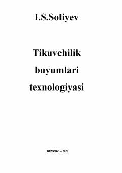

TBTikuvchilik buyumlarini ishlab chiqarish texnologiyasi va jarayonlari haqida o'quv qo'llanma.
Ushbu o'quv qo'llanmada kiyim haqida umumiy ma'lumotlar, tayyorlov-bichish jarayonlari, detallarni biriktirish usullari va tikuv buyumlarini namlab-isitib ishlash xususiyatlari yoritilgan. Kitob oliy ta'lim muassasalarining yengil sanoat yo'nalishi talabalari, magistrlar va mutaxassislar uchun mo'ljallangan.